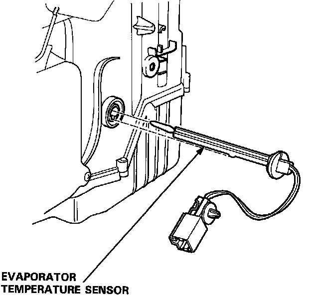

Operation CHARM
: Car repair manuals for everyone.
Home
>>
Acura
>>
1993
>>
NSX V6-3.0L DOHC
>>
Repair and Diagnosis
>>
Heating and Air Conditioning
>>
Evaporator Temperature Sensor / Switch
>>
Service and Repair
Evaporator Temperature Sensor / Switch: Service and Repair
Evaporator Temperature Sensor Removal

Give the evaporator temperature sensor a quarter turn and then pull it out